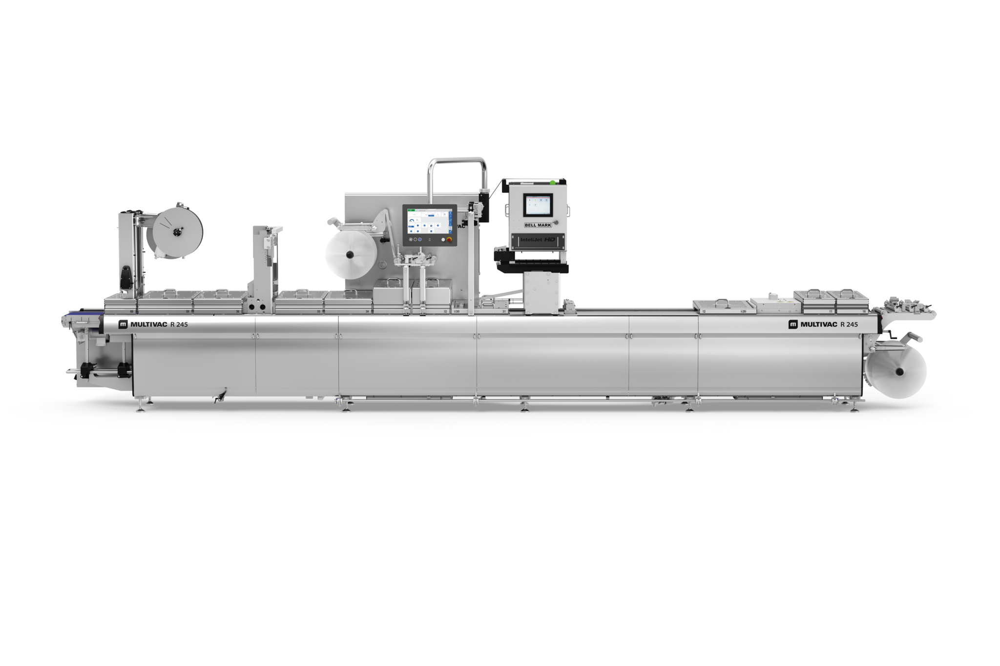
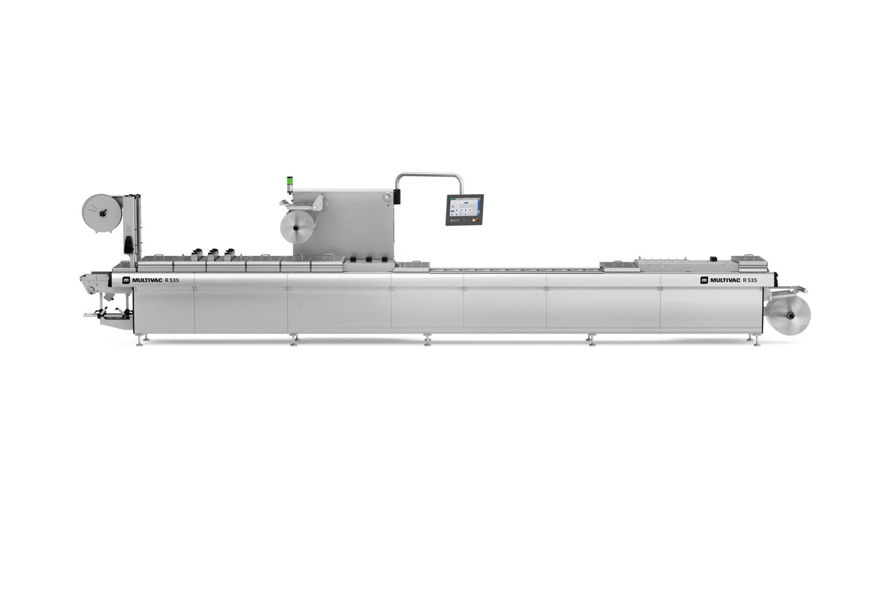
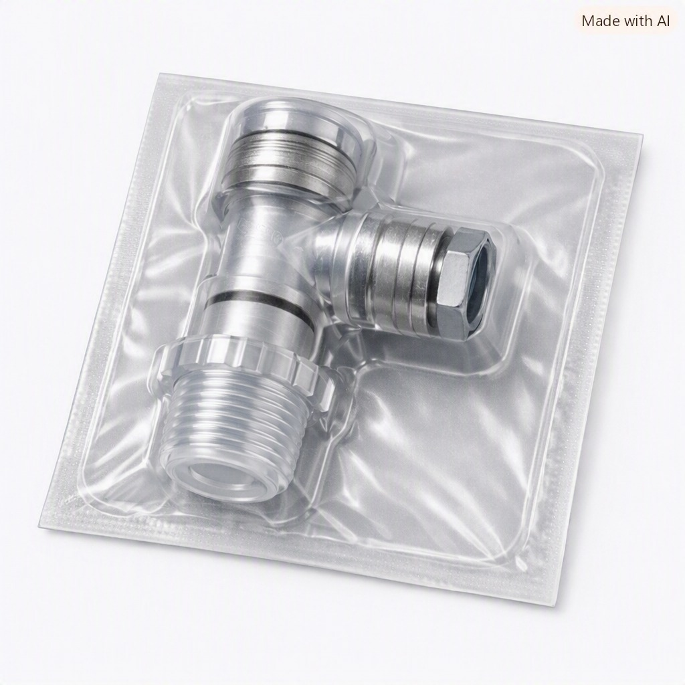
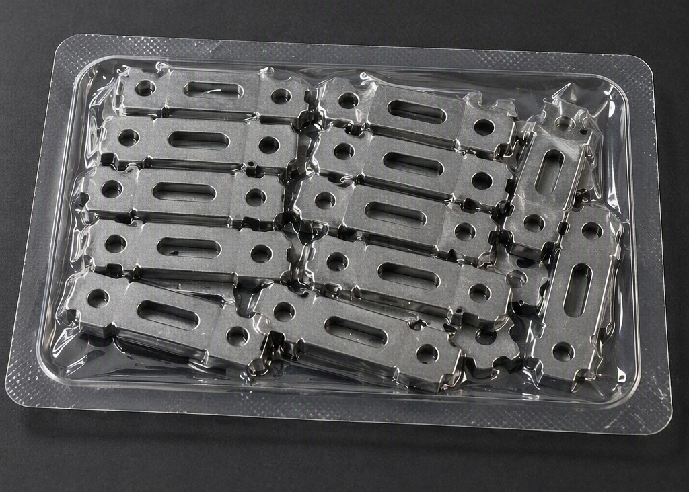
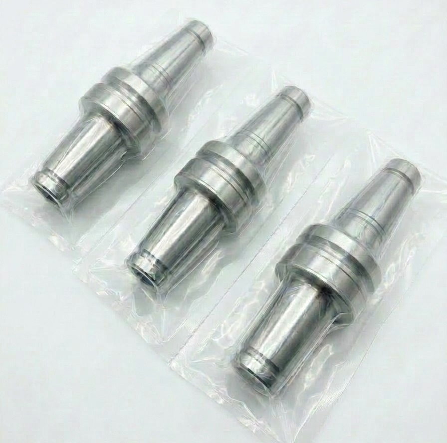

MULTIVAC
包装工程の連続自動化と、製品に合わせた保護包装を実現
部品包装、クリーンルーム包装、工程間包装から搬送トレーの内製化まで対応する深絞り包装システム
MULTIVACの深絞り包装機は、ボトムフィルムを包装機上で立体成形し、製品を投入した後、トップフィルムでシールする連続式自動包装機です。既製袋や既製トレーを一枚ずつ供給するのではなく、ロールフィルムから製品に合わせた包装形状を連続的に作ることで、製品投入、真空・ガス置換、シール、カット、検査、排出までの自動化を支援します。電子部品、半導体関連製品、精密部品、機械部品、金属部品など、幅広い工業製品の包装に対応。真空包装、ガス置換包装、含気包装（シールのみ）など、製品特性や必要な保護性能に応じた包装仕様を検討できます。個別ポケットによる部品同士の接触防止や配置保持、クリーンルーム内の内装・外装包装、工程間搬送用の包装、搬送トレーの内製化などにも活用できます。





FORMED TRAY
深絞り包装機の成形・カット機能を利用し、ボトムフィルムから搬送トレーを製造できます。必要な形状と数量を社内で成形することで、既製トレーの最低発注数量、調達リードタイム、在庫保管スペースなどを見直せます。
購入トレーと内製成形トレーのどちらが適するかは、年間使用量、トレー単価、品種数、在庫保管費、金型費、フィルム単価、設備稼働率などを同じ条件で比較して判断します。内製化によって必ずコストが下がるとは限らないため、必要なときに必要な量だけ生産できる利便性や、在庫・調達面のメリットも含めて総合的に評価します。
製品寸法、生産量、品種数、必要な保護性能、自動化範囲から、包装機、金型、包装資材、包装条件を総合的に検討します。包装機単体ではなく、包装工程全体に適した組み合わせをご提案します。
MULTIVAC Japanでは、深絞り包装機の金型を国内で自社製作しています。製品形状や包装目的に応じたカスタマイズ、テスト結果を反映した調整、将来の製品追加に伴うフォーマット対応を支援します。
真空包装機を導入するだけで防湿性能が決まるわけではありません。高防湿包装には、包材のバリア性、安定した真空、気密性の高いシール、包装後に損傷させない搬送設計が必要です。包装機、包装条件、包材を組み合わせて、必要な保護性能を作ります。
製品サイズと包装数だけでなく、品種変更頻度、作業者数、設置環境、前後工程、将来の増産計画を踏まえて、包装機とライン構成を選定します。
クリーンルーム包装は、包装機だけでは成立しません。設備仕様、包装仕様、清浄度区分、開封方法、運用手順を一体で検討し、実製品による包装テストで適合性を確認します。
製品供給、投入、包装、検査、印字、排出までを一つの工程として設計し、包装品質の標準化、省人化、生産能力の向上を支援します。
つくば本社工場のLocal Innovation Center（LIC）では、実製品と実機を使用した包装テストを実施しています。豊富なテスト金型とサンプル包材を活用し、サンプルパックを作成します。包装機械、包装技術、包装資材の各分野の専門家が連携し、製品と工程に適した包装ソリューションを検討します。
清掃性、低発塵性、真空源、排気方法、使用材料、帯電防止、設置スペース、周辺設備との接続。一般的な製造環境だけでなく、クリーンルームなどの設置条件も確認し、包装機本体、真空源、排気、使用材料、運用方法を含めた仕様をご提案します。
包装テスト、金型設計、包材選定、機械仕様の検討から、設置、立ち上げ、トレーニング、アフターサポートまで国内スタッフが対応します。
MULTIVACの包装システムは、電子部品、半導体関連製品、精密部品、機械部品、金属部品などの保護包装と包装自動化に活用されています。
ボトムフィルムを包装機上で立体成形し、製品を投入した後、トップフィルムでシールする連続式自動包装機です。製品投入から真空・ガス置換、シール、カット、検査、排出までの自動化に対応できます。
「ブリスター包装機」は、成形したプラスチック容器やポケットへ製品を収める包装機の総称として使われる場合があります。MULTIVACの深絞り包装機は、ロール状のボトムフィルムを機械上で成形し、トップフィルムでシールする熱成形包装機です。
真空包装、ガス置換包装、含気包装（シールのみ）に対応します。製品を個別ポケットへ配置する包装、一括包装、クリーンルーム向けの内装・外装包装、工程間包装なども検討できます。
真空引きやガス置換を行わず、包装内部の空気を残したままトップフィルムをシールする包装です。真空による負荷を避けたい製品、形状を維持したい製品、工程間搬送や部品セットの保持、防塵を目的とした包装などに活用できます。
電子部品、半導体関連製品、精密加工部品、機械部品、金属部品、チェーン、ベアリング、切削工具、サービスパーツなどに対応します。製品の寸法、重量、形状、突起、表面状態を確認して包装仕様を設計します。
はい。製品ごとに個別ポケットを設け、部品を分離して配置することで、包装内部での接触や移動を抑えられます。
個別ポケットによる分離や配置保持により、部品同士の接触や包装内での大きな移動を抑えられます。ただし、落下や外部衝撃への対策には外装箱や緩衝材も必要となる場合があるため、損傷原因を分けて包装構造を検討します。
はい。ただし、必要な性能は包装機だけでなく、包材のバリア性、真空またはガス条件、シール品質、製品形状、保管・輸送条件によって決まります。実製品による包装テストを行い、包材を含めた仕様をご提案します。
製品条件や包装仕様に応じて検討します。深絞り包装では成形性が必要となるため、高防湿性能だけでなく、成形深さ、屈曲性、耐突刺し性、シール性を含めて包材適性を確認します。
製品への真空負荷が問題になる場合は、ガス置換包装や含気包装（シールのみ）を検討できます。製品への影響、包装内部の空気量、必要な保持力を包装テストで確認します。
対応可否は形状、重量、包材の耐突刺し性、ポケット形状、真空条件によって異なります。製品支持部の設計や保護材の併用を含め、実製品で破袋や損傷の有無を確認します。
対応可能です。ただし、真空源、排気、材料、表面仕様、清掃方法、帯電防止、要求清浄度などの条件確認が必要です。包装機単体ではなく、設備仕様と包装・運用方法を一体で設計します。
はい。内装包装品を外装包装工程へ搬送して再投入する構成により、清浄度区分間の移送や順次開封を考慮した二重包装工程を構築できます。
はい。成形ポケットによって投入位置を固定できるため、ピック＆プレースロボットやパーツフィーダーと連携した自動投入に適しています。
はい。画像検査、印字、ラベリング、集積、箱詰めなどの設備と連携し、製品投入から排出までの自動化ラインを構築できます。
はい。ボトムフィルムをポケット状に成形し、トップフィルムで密封せずに切り離すことで、製品専用の搬送トレーを製造できます。
必ずコストが下がるとは限りません。一方で、必要なときに必要な量だけ生産できる利便性、既製トレーの在庫や保管スペースの削減、最低発注数量の制約緩和、調達リードタイムや供給リスクの低減など、トレー単価以外のメリットも期待できます。
年間使用量、品種数、トレー単価、最低発注数量、調達リードタイム、在庫保管費、金型費、フィルム単価、設備稼働率、作業工数などを総合的に比較し、内製化の効果を評価します。
候補包材の成形性、シール性、耐突刺し性、バリア性、搬送安定性、ロボット把持適性などを確認したうえで検討します。現行包材との比較テストも可能です。
はい。水蒸気・酸素バリア、耐突刺し性、成形性、剛性、帯電防止性、開封性など、製品と工程に必要な性能を考慮して包装フィルムをご提案します。
はい。つくば本社工場のLICで、実製品を使用した包装テストとサンプルパック作成が可能です。包装方式、包材、条件、金型、包装機を変えながら比較検討します。